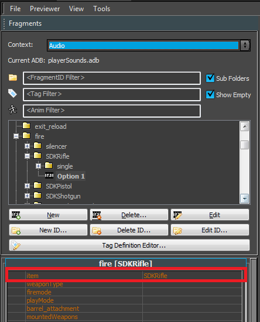
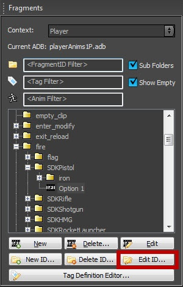
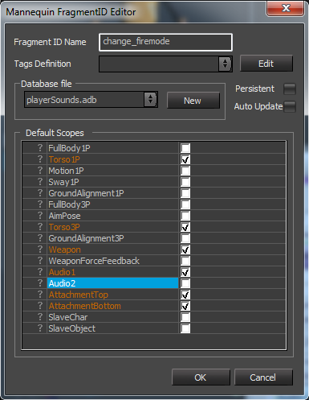
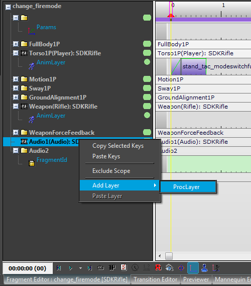
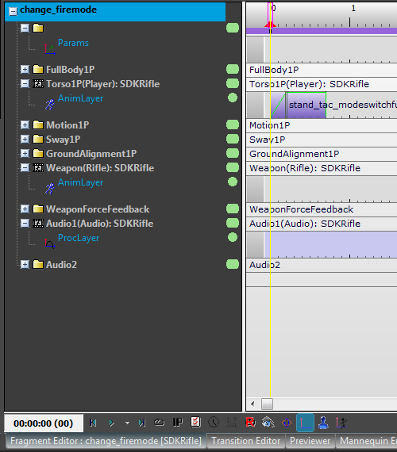
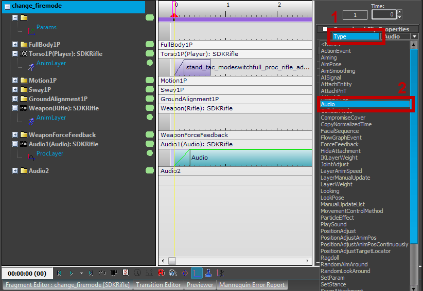
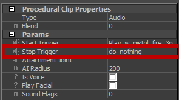

Обзор
В этом разделе представлен обзор того, как применить аудио к Mannequin. Однако обратите внимание, что статья Mannequin Урок по редактору 1 является необходимым знанием для получения следующей информации.
Введение
Звук в Mannequin контролируется добавлением Процедурные клипы чтобы Фрагменты и устанавливая свои Тип чтобы Аудио в Свойства процедурного клипа.
Фрагменты играют на
Mannequin решает, какой Фрагменты он сработает через Состояния тегов. Это обеспечивает гибкость в поддержке анимации со звуком, поэтому вы можете сделать ее очень детализированной или остаться довольно общей.
Mannequin Редактор описывает, как добавлять теги к Фрагмент. Эти теги определяют, что должно происходить в игре или с персонажем для достижения этой конкретной цели. Фрагмент быть выбранным.
Например, скажем, вы хотите, чтобы каждое оружие сопровождалось разными звуками, но вы не обязательно хотите различать, приседает ли игрок или стоит во время стрельбы. Для этого необходимо убедиться, что FragmentID правильно помечен с использованием родительского имени предмета оружия. Например, огонь [SDKRiflе] необходимо, чтобы SDKRifle был выбран для работы во всех положениях (приседая, стоя и т. д.).
FragmentID отмечен правильно 
Игра также может активировать дополнительные теги, такие как «стоять» или «приседать», в зависимости от позиции персонажа, но всегда выбирает наиболее подходящий — то есть тот, который соответствует большинству предоставленных тегов. Если вы решите предоставить более подробную информацию, этого можно добиться, создав различные Фрагменты с разными аудиосистема Триггеры и более широкий диапазон тегов.
Чтобы узнать больше о тегах, пожалуйста, прочитайте статью Mannequin Редактор определений тегов.
Включение областей для фрагмента
В зависимости от вашей настройки вы можете разместить триггеры аудиосистемы в определенных местах. Области применения. Например, в Sandbox Настройка редактора, звуки обычно помещаются в «Аудио1» или «Аудио2». Области применения.
Кроме того, предпочтительный способ включения Область применения для FragmentID заключается в редактировании маски области по умолчанию: при редактировании FragmentID вы можете выбрать, какой Области применения он должен использовать по умолчанию.
Включение области для фрагмента — 1 
Включение области для фрагмента — 2 
Подробное пошаговое руководство о том, как этого добиться, см. Mannequin Урок по редактору 1.
Добавление трека ProcLayer
Как только вы определились с тем, какой Область применения вы хотите разместить аудиосистему Триггеры вкл., вам необходимо создать ProcLayer тстойка.
Чтобы добавить ProcLayer трек, щелкните правой кнопкой мыши по Область применения и выберите AddTrack -> ProcLayer:

После этого макет должен выглядеть, как на скриншоте ниже.

Подробнее об этих треках и их свойствах читайте в статье. Mannequin Свойства трека.
Создание триггера аудиосистемы на уровне аудиопроцесса
В ProcLayer х временная шкала double — нажмите, чтобы добавить Процедурный клип. Клип можно перемещать, перетаскивая его начальную точку.
В меню «Свойства процедурного клипа» вы можете установить тип клипа.
Чтобы запустить триггеры аудиосистемы, нажмите на свойство «Тип» и выберите «Аудио»..

Вы можете видеть, что этот выбор меняет параметры, доступные для клипа в свойствах процедурного клипа (снимок экрана ниже). Теперь можно установить триггеры запуска и остановки и определить их поведение.
Когда Фрагмент завершает звук и останавливается, как описано в описании поведения запуска/остановки триггера, см. здесь.
Чтобы звук продолжал воспроизводиться, используйте do_nothing как StopTrigger.

Время смешивания не влияет на затухание звука.
Советы
Вы можете добавить любое количество ProcLayers до буквы Sсправиться которые помогут вам лучше организовать Фрагмент.
Процедурный клипs можно добавить к любому ProcLayer на любом Область применения. Просто имейте в виду, что в зависимости от ваших настроек клипы могут быть сохранены в другом месте. База данных файл.